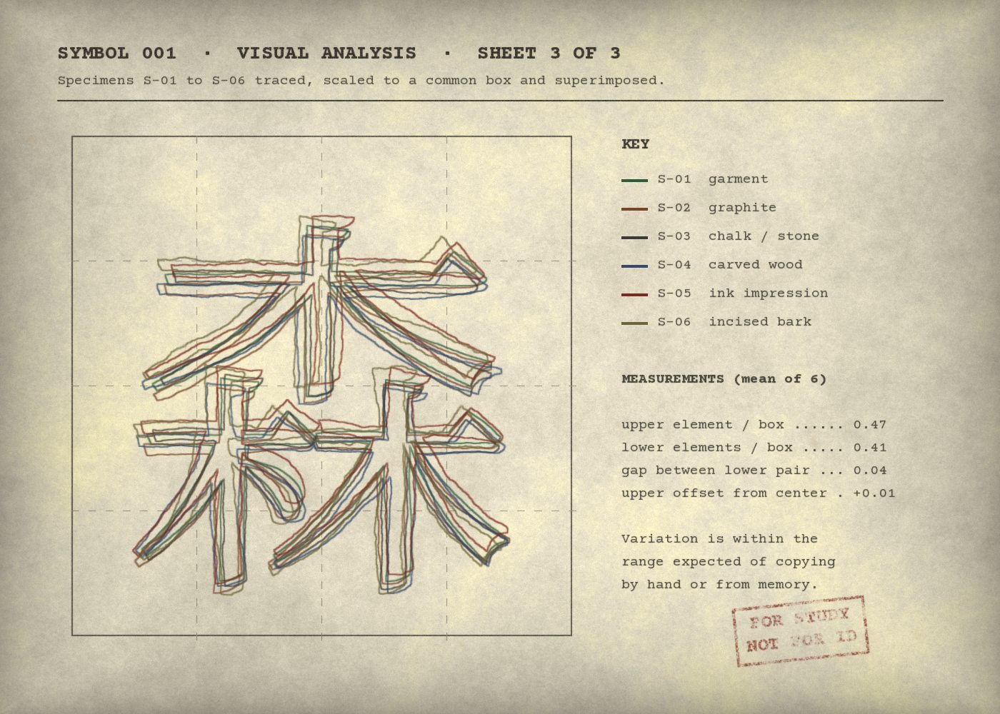
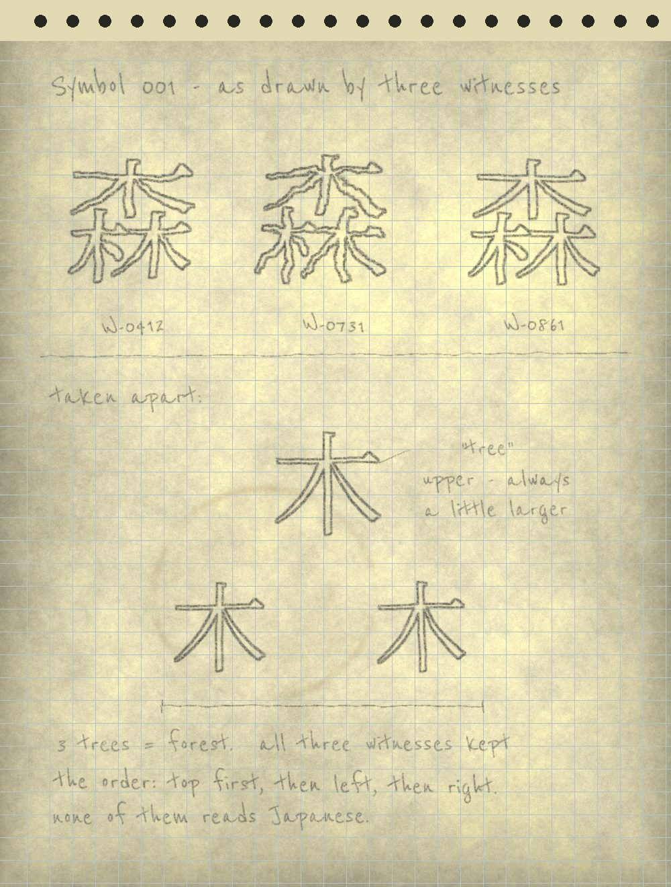
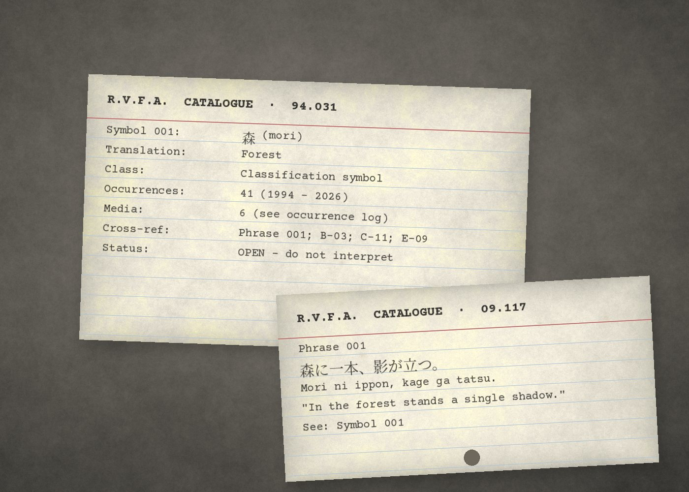
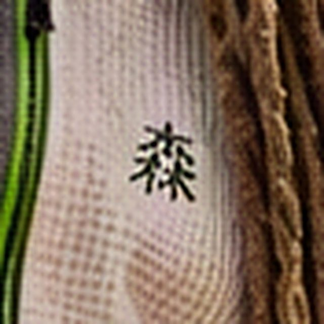
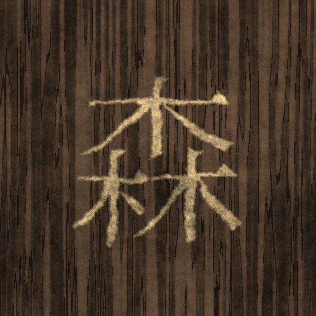

Symbol 001
A single written character recorded on clothing, on paper, on stone and on wood. The archive documents where it appears. It does not interpret it.
Translation
Forest. The character is a standard Japanese word and is rendered here without interpretation. It is the only written character consistently associated with the subject.
Research notes
The symbol was first entered into the collection in 1994, from a witness who described “a small square letter” on the chest of the subject’s jacket. It was identified as a written character in 2009 and as the Japanese character for forest shortly afterwards.
Proportions are consistent across sources to within the limits of memory and drawing. Witnesses who reproduce the symbol by hand tend to draw the upper element slightly larger than the lower two. Several describe the thread as dark green rather than black.
No source in the collection explains its use, and the archive has not sought one. Correspondence proposing meanings is filed separately and is not reproduced.
Visual analysis
B.3 · study sheets 2 – 3

Observations
- V-1Structure. Three identical “tree” elements, one above two. Read together: forest.
- V-2Proportion. The upper element is drawn slightly larger than the lower pair in 31 of 41 occurrences.
- V-3Order. Witnesses who draw it from memory keep the same order — top, then left, then right — though none reports reading Japanese.
- V-4Color. Where color is recorded, it is dark green in 11 of 14 garment descriptions.
- V-5Placement. Always small. Never larger than a hand.

Occurrence log
B.2 · six representative specimens of 41



| Medium | Count | Earliest | Notes |
|---|---|---|---|
| Garment (witness description) | 14 | 1994 | Left chest in every case. |
| Graphite sketch | 6 | 2011 | Drawn from memory by witnesses. |
| Incised bark | 5 | 2001 | Locations withheld to protect trees. |
| Chalk on stone | 4 | 2009 | None survived more than one rainfall. |
| Carved wood | 3 | 2017 | Includes Artifact E-09. |
| Ink impression | 2 | 2014 | |
| Other / unverified | 7 | — | Reported but not seen by archive staff. |
Associated reports
B.4- 2009RVF-2009-014 · Phrase written in chalk on the footbridge. First identification of the symbol as a written character.
- 2011RVF-2011-019 · Repaired bicycle, Sixth Street area. Sketch B-03.
- 2022RVF-2022-012 · Note on the park kiosk. Mark drawn at lower right of C-11.
- 2024RVF-2024-017 · Unlisted trail marker. Carved on E-09.